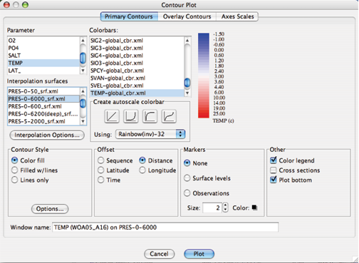
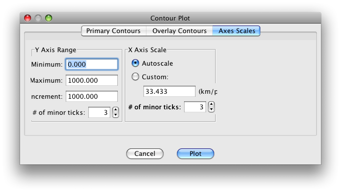

Example 4C: Vertical Distribution of Water Properties Along South-to-North Transects¶
DPO Text References:
DPO 4.2.5
Deep water temperature and potential temperature
DPO 4.3.3
Intermediate depth salinity
DPO 4.3.4
Deep water salinity
DPO 4.4.3
Depth distribution of potential density
DPO 4.5
Dissolved Oxygen
DPO 4.6
Nutrients and other tracers
We will now use three custom-made data files to examine the vertical distribution of water properties along south-to-north transects through the eastern Atlantic, central Pacific, and eastern Indian Oceans. The three data files needed are:
WOA09_A16.joa (Antarctic to Iceland)
WOA09_P16.joa (Antarctic to Kodiak)
WOA09_I8S_I9N.joa (Antarctica to Bangladesh)
The WOA09 in each data file name reminds you that these transects were made (are subsets taken from) the World Ocean Atlas 2009 annual one-degree data set.
The A16, P16, and I8S_I9N in the data file names indicate that the path chosen for each transect follows the track of an oceanographic section occupied during the World Ocean Circulation Experiment (WOCE) during the 1990’s.
Note
You can find data and information about oceanographic expeditions along these and other lines at http://cchdo.ucsd.edu
Learn More
WOCE and WOCE line numbers (parts are copied from WOCE online information)
The World Ocean Circulation Experiment (WOCE) was a component of the World Climate Research Program (WCRP) (http://wcrp.wmo.int/wcrp-index.html) and remains the most ambitious oceanographic experiment undertaken to date.
The aims of the program were to establish the role of the oceans in the earth’s climate and to obtain a baseline dataset against which future change could be assessed.
Sophisticated numerical ocean models were also developed to provide a framework for the interpretation of the observations and for the prediction of the future ocean state.
About 30 nations participated in the observational program by using ships to make physical and chemical observations and by employing moored and drifting instrumentation. Global observations were also made from satellites.
The field phase of the project lasted from 1990-1998 and was followed by Analysis, Interpretation, Modeling, and Synthesis activities. This, the AIMS phase of WOCE, officially continued to the end of 2002.
On the completion of WOCE other large-scale projects which involve the ocean and climate are being actively pursued. Among them are:
CLIVAR (http://www.clivar.org): a global study of the earth’s climate variability and predictability
Although there is meaning to some parts of the WOCE transect names (e.g., A, P, I, and S stand for Atlantic, Pacific, Indian, and Southern, respectively), the WOCE line numbering scheme does not have additional meaning.
In Examples for a later DPO chapter, we will compare data from actual oceanographic expeditions along each of these WOCE lines with WOA averaged ocean data.
Here, however, the WOA versions of the WOCE transects handily provide a generally accurate depiction of:
The basic vertical, south-to-north configuration of global ocean seawater property distributions
Their basin-to-basin and equator-to-high-latitude variations
Learn More
Meridional and Zonal Vertical Sections
In standard oceanographic terminology, vertical sections are vertically-oriented slices through the ocean.
A “meridional” vertical section is aligned south-to-north (or north-to-south) along a meridian, or longitude line. A meridional vertical section need not, however, exactly follow a line of constant longitude - this is a concept rather than a rule.
In the broadest, most general terms, meridional sections are often useful to illustrate the variations in seawater characteristic between climate zones (e.g., the equator - tropics - sub-tropics - subpolar - polar zones).
A “zonal” vertical section is aligned west-to-east (or east-to-west) along a latitude line. Again, this is a concept, so a zonal vertical section need not exactly follow a line of constant latitude. Zonal sections help illustrate where, in the oceans, exchanges between climate zones take place - some can be used to calculate fluxes and transports between climate zones.
We have organized the vertical section data files, included with the DPO JOA Examples, to begin with south (or west) profiles on the left hand side of section plots proceeding to north (or east) on the right.
This should help you keep your bearings when examining sections in JOA. It should also be noted that while many oceanographers use this orientation convention; many other oceanographers are equally committed to its opposite.
JOA’s vertical section plotting tools are versatile and complex. To streamline the plot-generation interface, we have provided the ability to get a usable plot with the fewest feasible number of user-made choices:
Select a parameter to plot on a vertical section
Select a surface onto which to interpolate the data (more about this below)
Choose a color bar to color/contour the section data (or approve JOA’s automatic color/contour choice, if presented to you)
Click on Plot (or OK) and, voila, you get a usable vertical section.
Now for the details.
Files that may be needed or created in this example:
WOA09_A16.joa
WOA09_P16.joa
WOA09_I8S_I9N.joa
Exercise 4C-01: Vertical Sections - Making a Contour Map Plot¶
Start JOA
File → Open… → WOA09_A16.joa
The Data Window should look approximately like this:
This will bring up the JOA Contour Plot dialog box:

FIG 4c-02 The Primary Contours panel of the Contour Plot dialog box¶
We show this dialog box as it appeared after we have made four choices:
We selected a Parameter to plot - we selected TEMP (= Temperature).
We selected the PRES-0-6000_srf.xml Interpolation Surface onto which to interpolate the temperature data (see below). This is a pre-chosen (by Swift) set of 64 pressure surfaces that provide an oceanographically-useful interpolated version of typical open ocean profile data.
We selected (actually, JOA auto-chose it for us and we accepted it) the TEMP-global_cbr.xml Colorbar to color/contour the interpolated data.
We selected Latitude under Offset
All other choices in the Contour Plot dialog box shown are JOA defaults (see below for explanations of each of these).
These three choices - plus the defaults - are sufficient for JOA to interpolate the data and draw a section.
In fact, if you click Plot (or OK) in the Contour Plot dialog box at this point, JOA will draw this solid color contoured section:
Recall that in the left-to-right convention used in these DPO JOA Examples, south (the Weddell Sea, off Antarctica) is on the left and the Icelandic continental slope is on the right.
The bathymetric and oceanographic features on this plot look similar to those in DPO Figure 4.10(a), as well they should, since you have just plotted multi-year averaged data along the same path as the single-cruise data used by the DPO authors. With JOA, however, it is easy to explore the data
Learn More
JOA - Vertical Section Plots (Contour…)
Java OceanAtlas contour plots are vertical section plots with contours/colors applied to the entire active data set, for example a contoured vertical section of salinity versus pressure.
It is not necessary, however, for the z-axis on a contour plot to be restricted to pressure. Any observed or calculated parameter can be used as the vertical axis, but an ‘interpolation surfaces’ must exist or be created for it, (see the Surface Manager section in the JOA User Guide) and any observed or calculated parameter can be plotted on it. For example, it is possible to plot a contoured vertical section of phosphate with nitrate as the vertical axis.
The horizontal axis on a Java OceanAtlas contour plot is either:
Spatially related (i.e., the horizontal spacing is proportional to the distance between stations, or to latitude or longitude)
Temporally related (i.e., the horizontal spacing is proportional to the time between stations)
A fixed sequential offset can be used
As with all Java OceanAtlas plots, contour plots share a linked data cursor with other JOA plots and all contour plots. Color/contour bars and standard surfaces used in preparing contour plots can be customized in numerous ways.
X and y interpolations from the observed data are required before Java OceanAtlas can generate contoured parameter plots.
The interpolations are carried out on surfaces (standard values) of the y-axis.
The methodology and perhaps the philosophy underlying interpolations are important issues. Our goal was to provide useful and accurate contour plots that show all features of the data while adding no false features. Hence, we chose simple linear interpolation between closest points on the y-axis and adjacent profiles (stations) on the x-axis (filled contours are actually produced using a bi-linear interpolation algorithm). Java OceanAtlas uses elementary gridding and contouring algorithms in order to bring out all the features (and problems) of the data.
Java OceanAtlas draws its plot contours (or color divisions on a solid-color contour section) on a 2-dimensional grid of the stations and standard levels. It places a defined contour value by linear interpolation using the data from the two closest standard levels at each station.
Java OceanAtlas looks for all instances of a contour value ‘fit’ at each station from the smallest-valued standard level to the highest-valued standard level.
The application then has the interesting task of joining these values to those from adjacent stations. The application does this in a simplistic way at first not looking ‘far’ away to join lines.
However, interpolation options are available for far-field interpolating, which can assist the Java OceanAtlas interpolator to fill in missing values from the interpolation before contouring, in effect looking past a user-provided number of missing-data stations (horizontal) and/or observations (vertical) for contour data. This is useful to fill in contours where data are missing and/or sparse.
At the time of this writing, there are no smoothing or ‘objective mapping’ features.
We suggest that users of the DPO JOA Examples now become familiar with JOA Contour Plot Options via the supplied link, before continuing to plot additional vertical sections for the DPO JOA Examples. [As always, see the JOA User Guide for in-depth discussion and details.
Learn More
JOA - Contour Plot Options (referring to the Contour Plot dialog box)
Options accessed from the Primary Contours (default/top) page of the Contour Plot dialog box:
Parameter
This list in the upper left contains all original and calculated parameters. Any one parameter can be selected by clicking on its name.
Interpolations
This list contains all standard level files available to Java OceanAtlas. (More of these standard level files can be made from the Surface Manager found under the Resources menu.) Any one set of interpolation surfaces can be selected by clicking on its name.
Interpolation Options
Click on this button to brings up the Interpolation Options dialog:
Top down : The default interpolation direction choice, Java OceanAtlas searches the data for the first match to the current standard surface from the shallowest observation to the deepest observation, and vice versa for the Bottom up choice.
When one is plotting a contoured section of a parameter onto pressure (i.e., pressure is the y axis), this is not an issue. But imagine plotting silicate onto standard surfaces of salinity in an ocean region where there is a mid-depth salinity extremum. In that case the plotted result would vary depending on this interpolation direction.
Missing Value Options : This option permits Java OceanAtlas to look in the horizontal and/or vertical for data to use in preparing the interpolation for a contour plot when there are missing data.
Sometimes one prefers to visualize all the ‘holes’ in the data, but with sparse data; for example, dissolved helium data that are not present at every bottle or every station in a hydrographic file, it is sometimes useful to use JOA’s missing value options to fill in the holes in the interpolation grid.
Note
It is also possible to achieve a useful contour plot by using a station filter to remove all stations totally missing the contour parameter.
JOA provides two basic techniques (and associated options) for dealing with missing data:
Vertical interpolation: JOA looks for observations that bound a standard level to interpolate to that level.
If one of the bounding observations in missing, this option directs JOA to look n number of observations below or above (depending upon the interpolation direction) in the profile for a non-missing value.
Far-field or horizontal interpolation: If a bounding observation in the current cast is missing, this option directs JOA to use up to n surrounding casts (before and after) to interpolate a value for the missing value.
It does this by first calculating the horizontal gradient of the contour parameter near the depth of the missing observation and secondly using the gradient to create “virtual” observations of the contour parameter at the current profile.
The closest “virtual” observation to the missing value is then used to interpolate the contour parameter to the surface level. A Maximum distance option is provided so that in cases of uneven station distribution along a track, Java OceanAtlas can be restricted from looking unrealistically far away for data to complete an interpolation.
Maximum number of observations: This option is provided to limit the number of observations away the interpolator will look for a non-missing value. This option is most useful for bottle profiles where the vertical spacing of bottles increases with depth.
Referenced Interpolations : These options allow you reference an interpolation to the value of standard level or to a mean cast. It is interesting to note that useful plots can be created with this JOA tool, but we do not use it in the DPO JOA Examples. Please see the JOA User Guide for explanations.
Color Bars
This area in the upper right of the Contour Plot dialog box offers several important, useful choices and features:
If one or more color bars for the selected parameter already exist, Java OceanAtlas will usually highlight the first matching choice on the list. But any color bar can be selected - and its numerical ranges and colors will be used on the contour plot - whether the color bar matches the parameter being contoured or not.
An alternative to selecting a color bar is to have Java OceanAtlas autoscale the contours (or color divisions). This is the only option when no color/contour bar exists for the parameter being contoured.
Four choices of ‘shape’ of contour interval over the data range are provided. These distribute the contours linearly through the contoured parameter’s data value range, or bunch the contours at the low or high ends or in the middle of the range.
The upper and lower parameter value limits of the autoscale range always cover the full range of the parameter being contoured.
An autoscaled color bar can be colored by any of the choices in the menu appearing to the immediate right of Using:. These color choices - 16 or 32 colors along a blue-white-red (or red-white-blue) or a rainbow or inverse rainbow color path - are supplied by the application and cannot be added to or modified by the user.
A preview of the selected or autoscaled color bar will appear in the panel at the right of the Colorbars area. This space is blank if there is no selected color/contour bar.
Double-clicking on the preview color bar preview opens the Color Bar Editor, which is described in the JOA User Guide.
Contour Style
This option allows you to select the basic look of a contour plot which could consist of solid color filled contours (the default), color fill with overlay contour lines, or just contour lines.
Contour Options
This button in the Style options section of the dialog brings up the Configure Contour Options dialog:
Choices are provided to change from the default coloring of contour lines by the colors of the chosen color/contour bar to black. (This is useful for preparing a contour plot for black & white publication.)
An option is provided to plot only every nth contour on a plot. This is especially useful when the Color fill w/contours option is chosen, where the added contour lines make it easier to see subtle features in the contours.
The contour plot background color can be changed by clicking on the color square, which brings up the color picker, or the background color can be changed to white or black by selecting from the menu of choices to the right of Styles.
This option makes the station-to-station separation on the horizontal axis of the contour plot either equal, when the offset by sequence option is chosen, or proportional to either distance, latitude, or longitude between stations.
Markers
This options provides options for no data point markers (default) or for either of two kinds of markers:
At the levels of the standard surfaces used in the original interpolation, or
At the levels of the observed data (Observations) at each station - i.e. on a traditional hydrographic section ‘plotting the bottles’. The size and color of the markers can be also be customized.
Other
This option choices add a Color Legend to the plot (the selected or autoscaled color/contour bar).
This is essential if one wants to know which contour is which (hence the default).
The other option is to add a browsing feature (Show cross sections).
These optional features take up quite a bit of space in the Contour Plot window, hence reducing the size of the area available for actual contoured data.
Hence either, both, or neither of these options may be checked.
Java OceanAtlas will automatically suggest a name for the resulting plot window. The Window Name field provides the option to enter a name of your choosing.
Options accessed from the Overlay Contours page of the Contour Plot dialog box
Overlay contours are contours of second parameter on top of a JOA Contour Plot. For example, contours of salinity can be added to a JOA contoured temperature section. This interesting feature is not used in the DPO Examples. Overlay contour plots are described in the JOA User Guide Appendix A: Advanced features of Java OceanAtlas 4.0.
Options accessed from the Axes Scales page of the Contour Plot dialog box
The top two text fields in the Y Axis Range options initially show the minimum and maximum y-axis data values in the chosen set of standard interpolation surfaces, i.e. for PRES-0-6000_srf.xml the minimum is 0 and the maximum is 6000.
The ‘interval’ text field is Java OceanAtlas’ best attempt at a logical interval between major tics on the y-axis.
To plot only a portion of the range, select the text as necessary and type in the new axis limits to impose on the plot. If this is done, the user should also type in a new interval as/if appropriate. The number of minor tics between major tics can also be specified.

FIG 4c-06 Axes Scales panel of the Contour Plot dialog box¶
X Axis Scale
is usually set to be autoscaled (the default), but the x-axis scale can be made a specified ratio of kilometers per pixel in order to make plots with matching x-axis scales.
Note that in some instances with this option not all of the resulting x-axis may be shown in the resulting plot, in which case it may be necessary to increase the width of the plot. The number of minor tics between major tics can also be specified.
Plot
draws the plot as specified.
Cancel or Done
acts as a cancel feature with no action taken.
Java OceanAtlas initially scales all contour plots to fit into the same size window on the monitor, regardless of the number of stations, y-axis range, or length of the section. However, the contour plot window can be distorted, resized, or zoomed via the size and zoom boxes, after the plot is drawn, to better match the aspect ratio preferred for the plot.
At this point in your DPO JOA Examples experience, you should be ready to explore ocean-to-ocean differences in some of the most-frequently measured seawater properties.
The following data files, which we supply, will allow you to plot WOA05 time-averaged sections of temperature, salinity, dissolved oxygen, nitrate, phosphate, and silicate from the Atlantic, Pacific, and Indian Oceans, respectively:
WOA09_A16.joa (Antarctic to Iceland)
WOA09_P16.joa (Antarctic to Kodiak Island)
WOA09_I8S_I9N.joa (Antarctica to Bangladesh)
The WOA09 averaged profiles from these were chosen to follow the tracks of the WOCE A16, P16, and I8S/I9N sections shown in DPO Chapter 4.
If you have sufficient display area for your computer, you can open each of the data files at once in JOA (using JOA’s Open… command under JOA’s File menu three separate times), resulting in three JOA Data Windows, i.e., one for each data file.
Note
To plot from a specific data set when you have multiple Data Windows open, you must have either its Data Window or any plot window made from that data set as the current (“top most”) window on your computer.
The JOA Windows menu shows every open JOA window in an easy-to-understand format. Using the Windows menu can help reduce confusion when multiple data files are open in JOA, each with its own plots.
Remember, you can click the mouse pointer on any location on any section, and the JOA browsing dot will jump to the closest data location to that spot.
Meanwhile the JOA Data Window will show the data at that point, and the browsing spot on other JOA plots from that data set will jump to that data point on each plot. This linking of the JOA browsing mechanism is useful in exploring data.
Examine each of the section trios with an eye to features which are similar in each of the oceans, and features which differ.
Examine
In similar-looking features, in which ocean and/or hemisphere is each most well developed (most extreme)?
Consider, also, that all three sections reach into the Southern Ocean, which is a circumpolar feature.
You will find some interesting differences in water properties between the Atlantic and Pacific Oceans in particular. For example, in the salinity sections above, which are colored/contoured with the same JOA color bar, it is obvious that the North Atlantic Ocean is significantly saltier than the North Pacific Ocean.
The DPO text will discuss this in later chapters, but this exercise provides you an opportunity to begin to familiarize yourself with typical distributions of commonly-measured seawater properties. You may find comparing the oxygen and silicate sections between the three major oceans intriguing.
Later on in the DPO JOA Examples we will plot original data from recent expeditions along the same tracks.